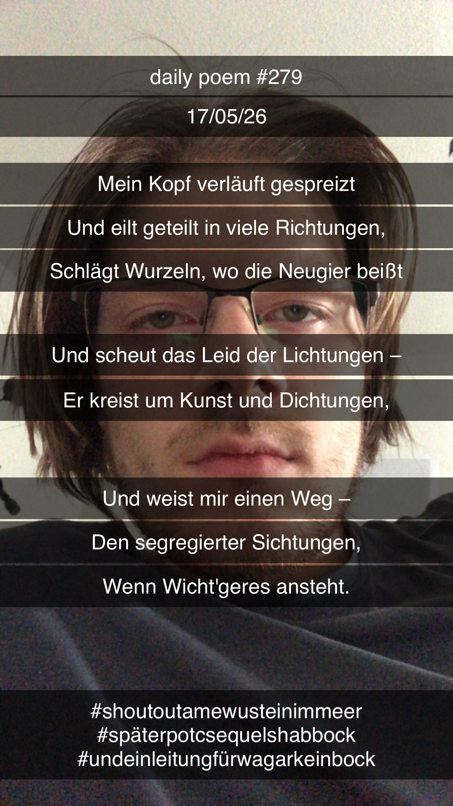

Mein Kopf verläuft gespreizt
[279]Mein Kopf verläuft gespreizt,
Und eilt geteilt in viele Richtungen,
Schlägt Wurzeln, wo die Neugier beißt,
Und scheut das Leid der Lichtungen –
Er kreist um Kunst und Dichtungen,
Und weist mir einen Weg –
Den segregierter Sichtungen,
Wenn Wicht'geres ansteht.
